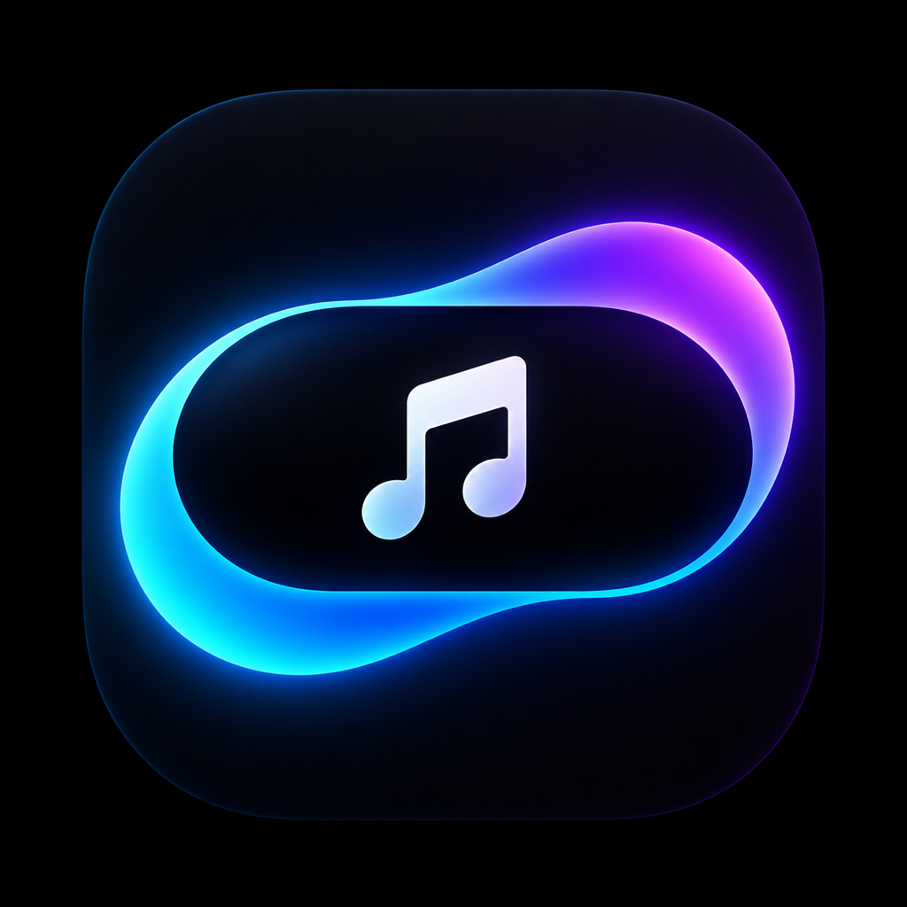
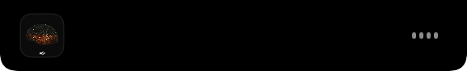
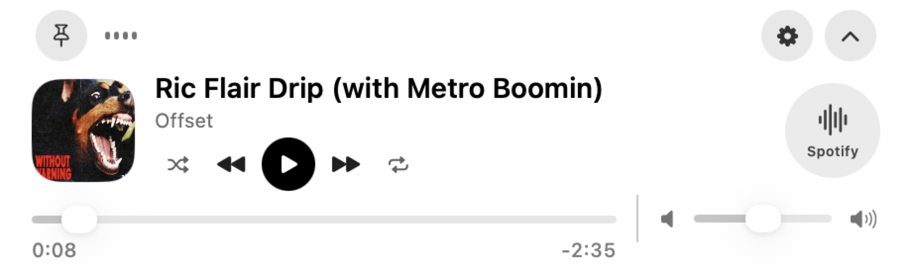
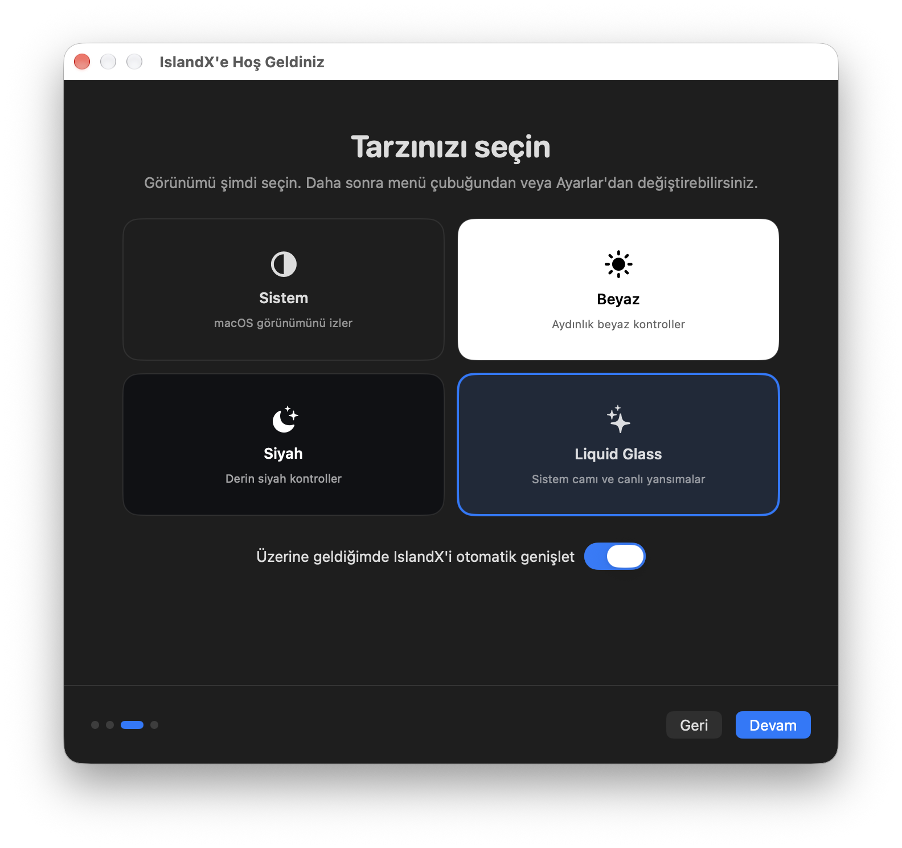

Şarkı değişince kısa bir bakış
Yeni parçayı birkaç saniye gösterir, ardından dikkat dağıtmadan tekrar küçülür.

IslandXIslandX, Music ve Spotify kontrollerini MacBook'unuzun kamera çentiğiyle bütünleştirir. Çentik olmayan ekranlarda ise zarif, yüzen bir adaya dönüşür.
macOS 13 ve sonrası · Apple Silicon ve Intel
Yalnızca müziğe odaklanan kompakt görünümü veya medya, tarih, saat ve günlük araçları birleştiren Genel paneli seçin.
Genel panelde üst menüler ve sağ taraftaki kartlar tıklanabilir; Takvim, Saat ve Pil ayarlarına doğrudan ulaşılır.
Hover, tıklama veya çentiğin orta bölgesi: IslandX'in ne zaman genişleyeceğini siz seçin. Aşağıdaki davranışları deneyin.
İmleç çentiğe geldiğinde kontroller yumuşakça açılır.
Yeni parçayı birkaç saniye gösterir, ardından dikkat dağıtmadan tekrar küçülür.
Kapak görseline veya kaynak simgesine tıklayın; Music ya da Spotify öne gelsin.
İsterseniz tam ekran uygulamalarda otomatik gizlenir ve çalışma alanınızı size bırakır.
IslandX, dikkatinizi dağıtmadan ihtiyacınız olan medya bilgilerini ve kontrolleri gösterir.
Ekran geometrisini otomatik algılar. Görünür Ada ile medya bilgisi çentiğin yanında kalır; Gizli Mini ile boşta tamamen kamera çentiğinin içine saklanır.

Sistem, Beyaz, Siyah ve desteklenen macOS sürümlerinde Liquid Glass. Görünümü ilk kurulumda veya istediğiniz zaman değiştirin.
Sparkle tabanlı imzalı güncellemeler yeni GitHub sürümlerini denetler. Otomatik güncellemeyi ilk kurulumda seçebilirsiniz.
Kapak görseli, parça ve sanatçı bilgisi, ilerleme, oynat/duraklat, önceki/sonraki, karışık çal, tekrar ve sistem sesi kontrolleri.

IslandX şu anda bağımsız bir GitHub sürümü olarak dağıtılır. İlk açılışta macOS'un Automation iznini isteyebilir.
IslandX DMG'yi indirIslandX DMG dosyasını indirin ve çift tıklayarak kurulum penceresini açın.
IslandX.app dosyasını Applications / Uygulamalar klasörüne sürükleyin.
Uygulamaya Control-tıklayın, Aç'ı seçin ve macOS uyarısında yeniden Aç'a basın.
Music veya Spotify kontrolü için istenen Automation iznine onay verin.

IslandX GitHub'da geliştiriliyor.